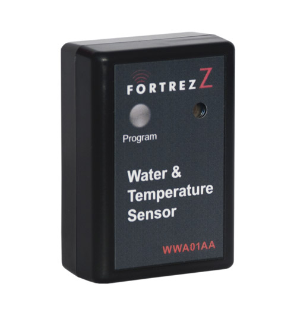

Fortrezz Flood Detected Sensor¶
Wireless Water & Temperature Sensor Black w/ LED by FortrezZ¶

Specification¶
- Power: Two AA alkaline batteries
- Battery Life: Calculated to be 1 to 2 years with no alarms and default Z-Wave TM network settings
- Frequency Range: 908.4MHz (US); 868.4MHz (EU)
- Distance Range: Max 100ft line of sight in unobstructed environment
- Size (LxWxD) and Weight: 3” (76 mm) x 2.1” (53mm) x 1.1” (30mm)
- Product Weight: 0.24 lb (109 g)
- Operating Temperature: -10oC (14F) to +70oC (158F)
- Reported Temperature: Reported temperature is at the unit and has a +/- 2 degC accuracy
- System Requirement: Any Z-Wave TM enabled network and controller.
Inclusion/Exclusion to/from a network¶
- Put controller to Inclusion/Exclusion mode
- Press and hold program button in 2 seconds. Device is excluded from current zwave network
- To include device to open zwave network, double press program button within 1.5 seconds
LED indicator¶
- 1 fast blink: Wake-up, notification sent (after quick button press and device is in z-wave network)
- 2 fast blink: Water alarm
- 3 fast blink: Temperature Alarm (either high or low setpoint triggered)
- 4 fast blink: An active alarm has been cleared (when a water alarm or a temperature alarm is no longer active)
- 5 fast blink: Low Battery (repeated every approx. 40 seconds)
- 1 slow blink: Device in z-wave network (also, after button held while in-Network)
- 3 slow blink: Device is removed from z-wave network (also given if adding was not completed)
Wake-up information¶
- Wakeup1: Power saving design wakes up every 4 seconds to test water and freeze sensor
- Wakeup2: Once every 4 approx. hours (default) unit wakes up to send a notification to controller to query and update the status of the unit. A controller can change this wakeup interval. Battery life is decreased when the wakeup interval time is shorter.
Configuration description¶
- Low temperature threshold
Parameter: 1 (0x01)
Size: 1 byte
- Value:
- Valid value:
- 0x00 ~ 0x7F (from 0 ~ 127 oC)
- 0xFF ~ 0x81 (from -127 ~ -1 oC)
Unit is celsius
Default: 0x04
- High temperature threshold
Parameter: 2 (0x02)
Size: 1 byte
- Value:
- Valid value:
- 0x00 ~ 0x7F (from 0 ~ 127 oC)
- 0xFF ~ 0x81 (from -127 ~ -1 oC)
Unit is celsius
Default: 0x46